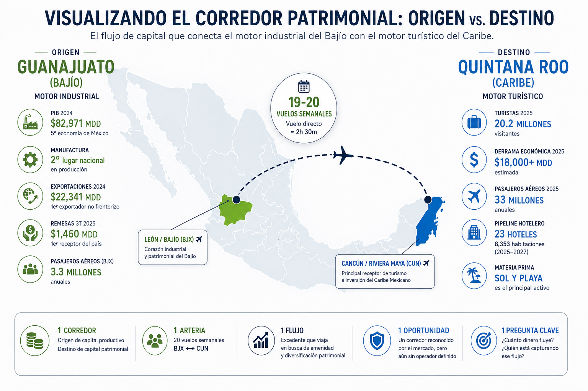
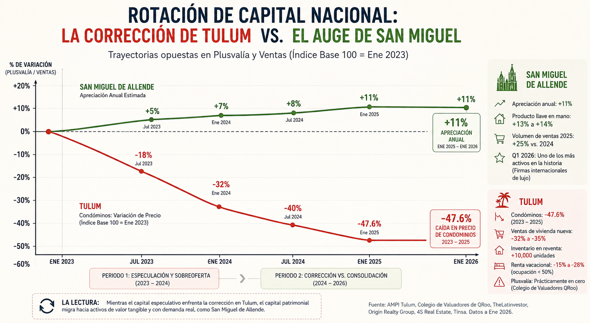
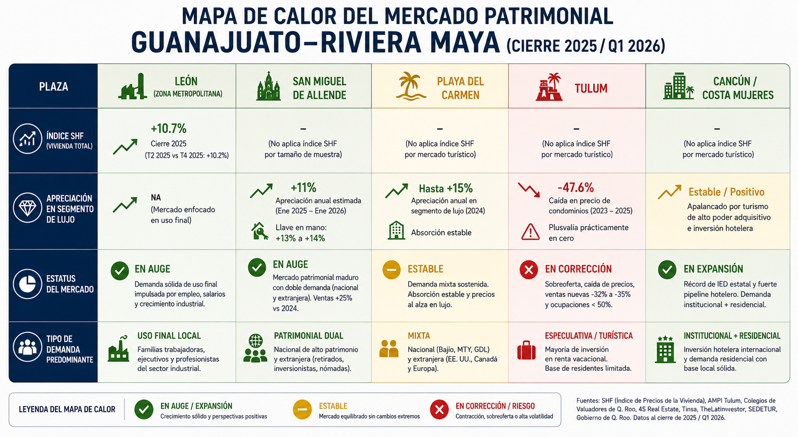

Hay una regla no escrita en la inteligencia comercial: el dato que todos repiten ya no aporta valor real. Cuando un presentador abre una junta diciendo que la Riviera Maya crece por el comprador extranjero, no está aportando nada nuevo. Está recitando el folleto.
El valor está en el cruce. En juntar tres cifras que viven en tres bases de datos distintas y descubrir que, leídas juntas, cuentan una historia que ninguna cuenta por separado.
Este texto es exactamente eso. Un cruce.
La tesis es simple de enunciar y difícil de encontrar: existe un corredor patrimonial entre Guanajuato y la Riviera Maya que ya fue reconocido por los propios desarrolladores del Caribe, que tiene una arteria física medible, y que todavía no tiene a nadie que lo opere de manera deliberada. Vamos por partes, con las fuentes sobre la mesa.

Fig. 008-A — Dos estados que son espejo el uno del otroDos estados que son el espejo exacto del otro
Guanajuato y Quintana Roo son imágenes invertidas. Uno produce; el otro recibe.
Guanajuato es la quinta economía de México. 82,971 millones de dólares de PIB en 2024. Segundo lugar nacional en producción manufacturera y automotriz. Primer exportador no fronterizo del país. Sin un solo metro de costa — y aun así, más de 22,341 millones de dólares en exportaciones al año. Su motor es la fábrica.
Quintana Roo es su reverso perfecto. Economía de puro servicio turístico. 20.2 millones de turistas en 2025. Derrama superior a los 18,000 millones de dólares. 33 millones de pasajeros aéreos. Su materia prima es el sol y la playa.
La teoría económica del capital patrimonial — los modelos que explican hacia dónde migra el dinero de la segunda residencia — predice algo muy concreto: el excedente de las regiones que producen viaja hacia las regiones que ofrecen amenidad, en proporción directa al ingreso disponible y a la facilidad del traslado.
Guanajuato cumple las tres condiciones al mismo tiempo. Genera excedente. Tiene conexión directa. La fricción del viaje es de dos horas y media.
La pregunta deja de ser si el dinero fluye. La pregunta es cuánto. Y quién lo está capturando.
La arteria: veinte vuelos semanales que nadie lee como indicador
Aquí está el primer dato que casi nadie usa comercialmente.
El Aeropuerto Internacional del Bajío no sirve solo a León. Concentra el tráfico de Guanajuato capital, San Miguel de Allende, Celaya, Irapuato y Salamanca. Es decir, drena la riqueza industrial y patrimonial completa del estado hacia una sola pista. Más de 3.3 millones de pasajeros al año.
La ruta directa hacia Cancún opera en junio de 2026 con entre 19 y 20 vuelos semanales — según el calendario consolidado de FlightConnections y el desglose por aerolínea de Google Flights. Son casi tres vuelos diarios directos entre el corazón industrial del país y el Caribe.
¿Por qué debería importar? Porque las frecuencias aéreas son un termómetro adelantado y gratuito de la demanda. Cuando una ruta se expande o se contrae, anticipa el apetito del comprador con trimestres de ventaja respecto a cualquier estadística de cierre notarial. Es un dato que cuesta cero monitorear y que vale una suscripción de inteligencia. La mayoría de los competidores ni siquiera lo mira.
El dato económico: el dinero institucional va al Bajío, el dinero patrimonial va al Caribe
Aquí el cruce que rompe la intuición. En 2025:
Guanajuato captó 3,621 millones de dólares de Inversión Extranjera Directa, aun después de caer 28% respecto al año anterior. Quintana Roo captó 1,064 millones de dólares — y ese fue su mejor año desde 2018.
Hay que leerlo dos veces. El estado de las plantas automotrices atrajo tres veces y media más capital extranjero que el estado de las playas más famosas de América Latina.
La lectura correcta no es que el Caribe pierda. Es que cada territorio importa un tipo distinto de dinero. Quintana Roo importa capital hotelero e institucional — el pipeline lo confirma: 23 nuevos centros de hospedaje y 8,353 habitaciones proyectadas entre 2025 y 2027. Guanajuato importa capital productivo. Y ese capital productivo fabrica, a su vez, familias empresariales y directivas con excedente para gastar.
La Inversión Extranjera Directa no compra departamentos frente al mar. Los ingresos que esa inversión genera, sí.
A eso hay que sumarle un flujo que ningún análisis inmobiliario del Caribe incorpora jamás: Guanajuato es el primer receptor de remesas del país. 1,460 millones de dólares solo en el tercer trimestre de 2025. Las remesas no compran producto de lujo de playa de forma directa, pero irrigan la base de la pirámide patrimonial del estado, liberan ahorro en la clase media, y sostienen el mercado local de vivienda — el mismo que la Sociedad Hipotecaria Federal reporta apreciándose a doble dígito.
Un propietario cuya casa vale 10% más cada año es, mecánicamente, un futuro comprador de segunda propiedad. Solo hay que saber leerlo antes que los demás.
Los desarrolladores del Caribe ya saben que existes
Este es el dato que convierte una hipótesis en tesis.
En septiembre de 2025, la Asociación de Desarrolladores Inmobiliarios de Quintana Roo declaró a la prensa especializada que, pese a la caída en la ocupación hotelera, las tasas de absorción inmobiliaria se mantuvieron estables. Y al describir quién estaba comprando, fue explícita: los compradores primarios siguen siendo nacionales, de Monterrey, Guadalajara, el Bajío y el Sureste.
Hay que detenerse en esa frase. En la contabilidad mental del gremio desarrollador del Caribe, el Bajío ya no es una plaza emergente. Es una categoría de origen con nombre propio, al nivel de Monterrey y Guadalajara. Y dentro del Bajío, el estado con mayor PIB, mayor masa exportadora y el aeropuerto más grande es, sin discusión, Guanajuato.
Traducción directa: el comprador que sostiene parte del Caribe ya sale de tu territorio. La pregunta es si alguien lo está atendiendo desde aquí, o si lo estás dejando llegar solo a una sala de ventas en Playa del Carmen donde compite por la atención de otros treinta brokers.
La grieta: Tulum se rompió, y eso cambió al comprador para siempre
No se puede hablar del Caribe como un bloque. Hay dos mercados dentro del mismo estado. Confundirlos produce recomendaciones equivocadas.
Tulum entró en corrección abierta. Las cifras son públicas y demoledoras: el precio de los departamentos en condominio cayó 47.6% entre 2023 y 2025, según la presidencia de la AMPI local. Las ventas de vivienda nueva bajaron entre 32% y 35% desde 2023, con más de 10,000 unidades entrando al mercado de reventa. El Colegio de Valuadores de Quintana Roo describió la plusvalía del destino como "prácticamente en cero." La renta vacacional cayó entre 15% y 28% por sobreoferta, con ocupaciones promedio por debajo del 50%.
El problema de fondo es de diseño de producto, y aquí la consultora Softec aporta el dato que lo explica todo: en Cancún y Playa del Carmen, cerca del 80% de la vivienda es de interés social o media, y apenas un 7% es vacacional. En Tulum, la proporción se invierte — alrededor del 80% del inventario se construyó para el turista. Un mercado sin base de residentes no tiene amortiguador cuando el flujo turístico se enfría. Es física de mercado, no mala suerte.
¿Por qué importa esto aquí? Porque el comprador del Bajío fue parte de la demanda nacional que ese mercado absorbió. No desapareció con la crisis. Cambió de criterio. El comprador que antes toleraba un render bonito y una preventa sin régimen de condominio hoy exige activo terminado, desarrollador con historial, y permisos verificables.
Y ahí aparece una oportunidad real. Con siete de cada diez desarrolladores del estado enfrentando algún conflicto legal — según la ANADE de Quintana Roo — el intermediario que verifique permisos, licencia y régimen de condominio inscrito ya no está haciendo trámite. Está haciendo la venta. En un mercado donde la confianza es el activo escaso, filtrar con rigor es el mejor argumento comercial que existe.

Fig. 008-B — El contrapunto que cierra el círculoEl contrapunto que cierra el círculo: San Miguel subió mientras Tulum caía
Mientras Tulum se desplomaba, el mercado de lujo dentro de Guanajuato hacía exactamente lo contrario.
San Miguel de Allende cerró el periodo de enero de 2025 a enero de 2026 con una apreciación estimada de 11% en términos nominales. El producto llave en mano de zonas céntricas creció entre 13% y 14%. El volumen de ventas de 2025 terminó aproximadamente 25% por encima de 2024. Y las firmas internacionales de lujo que operan en San Miguel y Querétaro reportaron el primer trimestre de 2026 como uno de los más activos de toda su historia.
La correlación entre ambos destinos es demasiado nítida para ignorarla. Tulum a la baja 47.6% en condominios. San Miguel al alza 11% anual con ventas creciendo un cuarto.
No se afirma aquí una causalidad medible — no existe una estadística pública que rastree el peso patrimonial individual de un comprador a otro. Pero la explicación más limpia del patrón es una rotación de capital nacional: el mismo dinero que entre 2020 y 2023 perseguía la preventa especulativa de playa hoy busca dos cosas distintas. El norte institucional del Caribe. Y el patrimonio colonial de calidad del propio Bajío.
Y aquí la frase que ningún comprador de Guanajuato ha leído todavía en un análisis: el metro cuadrado de lista de un departamento en Tulum ronda hoy los 74,700 pesos, según Tinsa. El promedio de vivienda nueva en San Miguel de Allende ronda los 43,600 pesos, según cifras de mercado de finales de 2025. El producto de playa cuesta más que el lujo patrimonial guanajuatense — pero con plusvalía en cero frente al 11% anual del segundo.
Ajustado por riesgo, hoy el lujo de Guanajuato le gana al producto especulativo del Caribe. Esa es una conversación de venta, no un dato de folleto.
El hallazgo que lo cambia todo: no hay corredor de constructores, hay corredor de compradores
Esta investigación buscó activamente el eslabón corporativo. Alguna desarrolladora con sede en Guanajuato construyendo en la Riviera Maya. El resultado fue una ausencia.
El ecosistema desarrollador del Caribe está dominado por capital de la Ciudad de México, Mérida, Monterrey, grupos hoteleros españoles y jugadores locales de Quintana Roo. No aparece, en fuentes públicas, un desarrollador guanajuatense de escala construyendo en la playa.
En investigación seria, una ausencia consistente no es un vacío. Es un dato. Y este dato define la naturaleza exacta del corredor.
Guanajuato no exporta desarrollo inmobiliario al Caribe. Guanajuato exporta demanda. Familias empresariales. Directivos del clúster automotriz y del calzado. Profesionistas de la economía exportadora. Patrimonios consolidados por dos décadas de apreciación local.
La consecuencia comercial es contraintuitiva y vale oro: la competencia por ese comprador no ocurre en Playa del Carmen, entre brokers de playa peleándose al mismo turista. Ocurre en León. En Celaya. En San Miguel. En la sala de la casa del comprador, meses antes de que pise una sala de ventas caribeña.
El ciclo de compra de una propiedad vacacional toma entre 12 y 36 meses. Casi todo ese ciclo transcurre en territorio Bajío. Quien controla la conversación patrimonial aquí, controla la originación del corredor completo.

Fig. 008-C — La foto completa: cinco plazas, cinco dinámicasLa foto completa
Cinco plazas. Cinco dinámicas distintas.
León y su zona metropolitana cierran 2025 con un índice SHF de +10.7% y +10.2% entre el segundo y cuarto trimestre. Residencial nuevo en torno a 3.63 millones de pesos. Demanda de uso final local, alimentada por la base industrial y exportadora del estado.
San Miguel de Allende con +11% anual y ventas 25% por encima de 2024. Lujo patrimonial dual — comprador nacional y extranjero — donde el nacional estabiliza el mercado y el extranjero lo impulsa. Primer trimestre de 2026 reportado como histórico por las firmas internacionales que operan ahí.
Playa del Carmen con apreciación de hasta 15% anual en el segmento de lujo durante 2024 y absorción estable. Demanda mixta, sostenida en buena parte por el comprador nacional del Bajío, Monterrey y Guadalajara.
Tulum con condominios a -47.6% entre 2023 y 2025. Ventas nuevas entre -32% y -35%. Plusvalía prácticamente en cero. Un mercado donde el 80% del inventario se construyó para el turista, sin base de residentes que amortigüe los ciclos.
Cancún y Costa Mujeres con IED estatal récord desde 2018. 5,203 cuartos de hotel nuevos que abren en 2026, incluyendo activos de ultralujo de 250 millones de dólares. Demanda institucional-hotelera combinada con residencial que tiene base local sólida.
Los precios por metro cuadrado que se mencionan en este análisis provienen de metodologías distintas — índices hipotecarios, avalúos, listados de portal, consultoría. Son comparables como órdenes de magnitud, no como serie homogénea.
Lo que esto significa si operas en este mercado
Cinco lecturas accionables del cruce.
La originación migró al origen. Si el comprador del Bajío decide en el Bajío durante año y medio o más, la inversión comercial inteligente está en tener presencia aquí — no solo en la plaza de destino. El costo de captar a ese cliente en su ciudad es estructuralmente menor que pelearlo en la sala de ventas de la playa.
El filtro de calidad es el nuevo discurso de venta. Verificar y comunicar permisos, licencia y régimen de condominio no es cumplimiento legal. Es marketing de confianza, en un ciclo donde la confianza escasea.
El corredor completo vale más que una sola plaza. Hoy existen tres piezas complementarias frente al mismo cliente: plusvalía local de dos dígitos en León, lujo patrimonial con doble demanda en San Miguel, y renta institucional en el norte de Quintana Roo. Tulum, hasta que depure inventario, es mercado de oportunidades selectivas para el comprador sofisticado — no producto de primera recomendación.
El dato aéreo es el indicador adelantado gratuito. Monitorear las frecuencias de la ruta BJX–CUN cuesta cero y anticipa la demanda con trimestres de ventaja.
El flujo tiene vuelta. Cuando el capital caribeño busque diversificarse fuera de su propio ciclo turístico, los mercados patrimoniales de Guanajuato son su destino natural. Quien construya hoy relaciones a ambos lados del corredor estará en las dos puntas de la transacción mañana.
Lo que este análisis no puede probar
Un análisis honesto declara sus límites. Estos son los de este.
No existe estadística pública que desagregue por estado el origen del comprador nacional en Quintana Roo. Que Guanajuato sea el componente principal del "Bajío comprador" es una inferencia razonada a partir de su peso económico, no un dato censal.
La atribución del capital que rotó de Tulum a San Miguel es la explicación más parsimoniosa del patrón, no una causalidad medida individuo por individuo.
Y la caída de 28% en la IED de Guanajuato en 2025, junto con la desaceleración automotriz global, es un riesgo real. Si el motor industrial se enfría de forma prolongada, la demanda del Bajío hacia el Caribe se enfriaría con rezago.
La diferencia entre un vendedor de datos y un analista es precisamente esta: el primero te vende certezas que no tiene; el segundo te entrega el mapa completo — con las zonas firmes y las zonas de niebla marcadas — para que tú decidas con los ojos abiertos. Esa es la clase de inteligencia que un equipo comercial serio necesita a su lado. Y es exactamente lo que la mayoría no tiene.
El corredor Guanajuato–Riviera Maya existe. Tiene arteria: veinte vuelos semanales. Tiene combustible: la quinta economía del país, el primer receptor de remesas, plusvalía local de dos dígitos. Tiene reconocimiento del otro extremo: el gremio desarrollador del Caribe lo nombra entre sus cuatro orígenes de demanda nacional. Y tiene, después de la caída de Tulum, un comprador con un criterio nuevo — calidad verificable por encima de la promesa.
Lo único que no tiene todavía es quien lo opere con método. Ese es el espacio que este análisis deja abierto. Y esa es, exactamente, la conversación que deberíamos tener.
Fuentes consultadas el 2 de julio de 2026: FlightConnections y Google Flights (conectividad aérea BJX–CUN); Líder Empresarial (tráfico del Aeropuerto del Bajío); Asociación de Desarrolladores Inmobiliarios de Quintana Roo vía The Tulum Times (origen del comprador nacional); Periódico AM (IED de Guanajuato 2025 y PIB estatal); SIPSE / Novedades Quintana Roo (IED de Quintana Roo y pipeline hotelero); DataMéxico y Secretaría de Economía (remesas y exportaciones de Guanajuato); Gobierno de Quintana Roo y SECTUR federal (turismo y derrama 2025); Econohábitat vía Yahoo Noticias (corrección de Tulum, AMPI); Xataka México con base en El Economista (valuadores de Quintana Roo); El Universal (estructura de vivienda Softec/Habitaria); Expansión Obras (4S Real Estate y Tinsa); TheLatinvestor (apreciación de San Miguel de Allende); Origin Realty Group (precio por m² en San Miguel); PRNewswire/Infobae (firmas internacionales de lujo Q1 2026); Sociedad Hipotecaria Federal (Índice SHF de León); ANADE Quintana Roo y compilación de fuentes primarias del sector (conflictos legales de desarrolladores; apreciación de Playa del Carmen).
Este documento se basa exclusivamente en información pública y verificable. Las hipótesis están señaladas como tales y no constituyen asesoría de inversión.